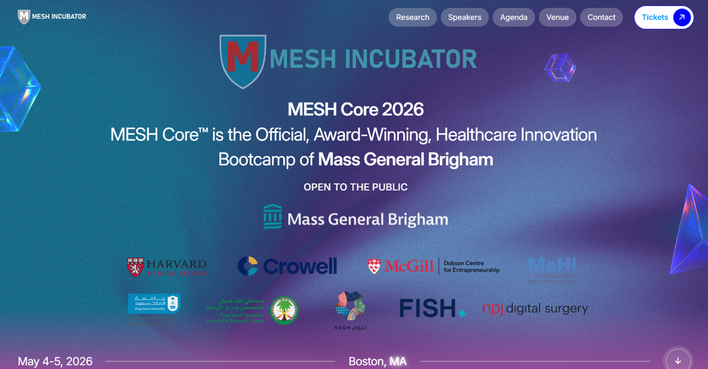

I spent two days at the Mass General Brigham MESH Core 2026 at Harvard. Two very full days of keynotes, investor panels, startup pitch sessions, a live HBS case study, and a real-world VC negotiation exercise. The program covered a wide range of ground: the fundamentals of AI and machine learning in clinical settings, the valley of death in biotech, how to craft a compelling elevator pitch, why startups fail, what investors actually look for when evaluating early-stage companies, the role of synthetic biology in longevity, and how patents and licensing work for healthcare innovators. There was also a negotiation simulation that I found particularly valuable that forced us to think about knowledge sharing in the context of deal-making, specifically what to reveal, when to reveal it, and how to strategize across multiple terms simultaneously rather than resolving one variable at a time. (That last part was genuinely hard for me, as I have a tendency to want to close out each item before moving on.) But the exercise made it very clear that bundling and sequencing across a multi-series negotiation is where the real leverage lives!
Much of what I took away from the two days can be distilled into a few themes that perhaps we should all keep in mind as we move forward.
AI is the throughline across almost every session, but the conversation has shifted. The discussion has matured past the hype, and we are at a point where the focus is on practical applications and real-world impact. The recurring idea was that hospital AI needs to be built locally, i.e. on local data, from local instruments, within local clinical workflows. 'Models trained to work "everywhere" do not work anywhere.' I found this to be a particularly interesting takeaway for academic and reserach labs accross the sector that are building universal platforms for disease identification or diagnostics. The clinical reality is that instruments, imaging protocols, and patient populations differ enough across institutions that generalizability is, in many cases, more of an illusion than an achievement. Perhaps we should start thinking about how to build backwards from the clinical workflow, not forward from the technology. I think this is something worth sitting with, especially for those of us in academic research who tend to default to building the most general version of a tool, especially in disease diagnostics.
The wellness and consumer health market is going to outgrow the disease market, and regulation has not caught up. Peptides, biomarker monitoring, GLP-1s, and direct-to-consumer channels as the frontier as the industry shifts toward more personalized and preventive care. The FDA's approval framework, which is geared toward clear disease endpoints and traditional trial design, simply does not map well onto longevity, wellness, or highly personalized interventions. There was chatter around the idea of N=1(!?) trial designs and expanded self-prescriptive authority. I do not think the question of how to balance informed self-experimentation with safety is anywhere close to being settled, but I could feel the room leaning toward more agency for the individual, not less.
Voice AI as a standalone company is not going to work. Interesting note from different speakers! Voice will be an important feature inside larger healthcare platforms, but it is not a fundable standalone category on its own. More like a consensus across the panel.
The platform versus single-asset pendulum is settling into a hybrid. After years of swinging between pure platform plays and one-asset bets, investors are now more open to companies that have one strong lead asset with a few pipeline elements behind it. Not a sprawling platform, but open to one lead asset with several supporting elements.
Data is the most valuable resource. Of course! But the hard problems are still unsolved. Who pays for AI implementation in a hospital? How do you maintain identity and access control for personalized health data? And how do you build representative datasets that do not bake in bias? And most of all, how do you ensure that the data you collect is representative of the population you are trying to serve? An example that stuck with me was that non-English-speaking patients for instance, are not woken up and asked questions at night because there is no translator available, and so their overnight data looks systematically different from that of English-speaking patients. These are not technical problems. They are structural ones, and I think they deserve much more attention than they currently get in healthcare datasets.
A final thought. I realize that most of these takeaways, when written down, sound like common sense. Build locally. Know your audience. Pick a path. Do not pitch to the wrong investors. But I think that is exactly the point. When you are deep in your own research, engrossed in your own world, it is easy to lose sight of the fundamentals. I have found that events like this are tremendously useful as a way to step back and recalibrate, not only because the ideas are new, but because the reminder itself has value.